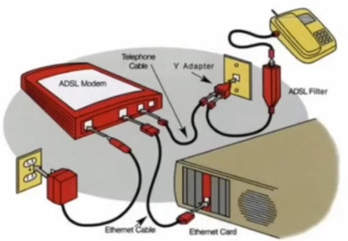

Public switched telephone network.(PSTN)
What makes a WAN a WAN, as opposed to a LAN?
As a general rule, if you own and control the line that the data is using to get from one place to another, you are not using wide area network (WAN) technology.
On the other hand, if you are using a form of transmission that you don’t own (e.g., you are leasing it or paying for the use of it), then you are likely using WAN technology.
One of the most common physical infrastructures used in WAN technology is the public switched telephone network (PSTN) due to its widespread availability.
Dial-up.
- Utilizes the PSTN to transmit network traffic as an analog signal.
- Requires an analog modem to format the network traffic.
- Maximum theoretical speed is 56 Kbps.
ISDN (Integrated Services Digital Network).
- Digital point-to-point WAN technology using the PSTN.
- Completely digital service.
- Requires the use of a terminal adapter (TA) for the connection to the end node (often called a digital modem).
- A Primary Rate Interface (PRI) uses 23 64 Kbps B channels and one 64 Kbps D channel for call setup and link management.
- Achieves 1.544 Mbps speed (T-1 leased line).
- Commonly implemented as a Basic Rate Interface (BRI), using two B channels and one D channel.
- Achieves 128 Kbps speed.
- Not as capable as a DSL (digital subscriber line), but it can often be implemented where DSL cannot be installed.

xDSL.
- A digital WAN technology using the PSTN.
- Requires the use of a digital modem.
- Dedicated digital line between the end point and a class-5 central office (CO).
- It is only possible within 18,000 feet of the CO.
- Carries voice and data (filters are put in place to get voice).
SDSL (Symmetric DSL)
- Synchronous in nature (upload and download speed is the same).
- Does not carry voice communications.
- If voice service is required, an additional line is needed.
- Used by businesses that don’t need the performance of a T-1 leased line, but that do require the symmetrical upload and download speeds.
ADSL (Asymmetric DSL).
- Asynchronous in nature (upload speed is slower than download speed).
- It can carry data and voice.
- Common upload speeds of 768 Kbps with download speeds of up to 9 Mbps.
- Most common implementation of DSL in the SOHO(small office home office) environment.
VDSL (Very-high-bit-rate DSL).
- Asynchronous in nature.
- Used when high quality video and VolP(Voice over IP) is necessary.
- Commonly limited to a download speed of 52 Mbps and an upload speed of 12 Mbps.
- It is only possible when located within 4,000 feet of a CO.
- Current standard allows for up to 100 Mbps over PSTN.
- To achieve that, the end point must be within 300 meters of a CO.
Broadband cable. 宽带
Coaxial cable(同轴电缆) networking.
- Broadband connection to a location delivered by the cable company.
- It can deliver voice, data, and television—all through the same connection.
- Headend: all cable signals are received at this point; signals are processed and formatted then transmitted to the distribution network.
- Distribution network: smaller service areas served by the cable company. The distribution network architecture can be composed of(由…组成) fiber optic cabling, coaxial cabling and/or hybrid fiber-coaxial cabling (HFC).
- Unlike DSL, the bandwidth is shared by the distribution network; this can lead to increased latency and congestion(延迟和阻塞).
- Final distribution to the premise(用户端) is usually through a coaxial cable.
- Data over cable service interface specification (DOCSIS): the specifications for how the signal will be received. All cable modems and similar devices must measure up to the ISP’s required DOCSIS standard.
Fiber.
Fiber-optic networking.
- Using light to transmit data and voice.
- Allows for more bandwidth over greater distances.
- More expensive to install, but is also less susceptible(收影响) to line noise(噪声).
- The fiber synchronous(同步) data transmission standard in the U.S. is Synchronous Optical Network (SONET).
- The international standard is Synchronous Digital Hierarchy (SDH).
- SONET and SDH define the base rates of transmission, which are known as Optical Carrier (OC) levels.
- Dense wavelength-division multiplexing (DWDM) is a method of multiplexing several OC levels (up to 32 channels) into a single optical fiber, effectively increasing the bandwidth of a single optical fiber.
- Coarse wavelength-division multiplexing (CWDM) is similar to DWDM but only allows for up to 8 channels on a single fiber.
- Passive Optical Network (PON) is a point-to-multipoint technology that uses a single optical fiber to connect multiple locations to the Internet.
- It uses unpowered(无源) optical splitters.
GSM/CDMA WAN connections.
Cellular(蜂窝) carriers use one of two methods for connecting devices to their networks— and they are not compatible.
Currently in the United States, AT&T and T-Mobile use Global System for Mobile (GSM) to connect their devices to their networks. Sprint and Verizon use Code Division Multiple Access (CDMA) as their method of connecting to networks.
The majority of the rest of the world utilizes GSM as the method of accessing cellular networks.
Cellular networking.
- Cellular networking involves using the cellular phone system for more than just phone calls.
- 1G cellular was only capable of voice transmissions.
- 2G cellular added simple data transmission capability (text).
- 2G EDGE offered some basic cellular networking connectivity and was a stopgap between 2G and 3G.
- 3G cellular is the beginning of cellular WAN networking.
- 4G is still an emerging technology; it currently consists of LTE and WiMAX.
- HSPA+ (Evolved High Speed Packet Access): a stopgap between 3G and 4G.
- The current standards allows for up to a maximum data rate of 84 Mbps.
- LTE (Long Term Evolution): uses an all-IP based core with high data rates. It is compatible with 3G and WiMAX.
- The current standards allow for up to 300 Mbps in download speed and up to 75 Mbps in upload speed.
- 5G networks offer not only higher speed, with a peak speed of 10 Gbit/s,but also substantially lower latency, enabling near-instantaneous(几乎瞬间) communication through cellular base stations and antennae(天线).
WiMAX WAN connections.
World Wide Interoperability(互通) for Microwave Access (WiMAX) networking.
- WiMAX was originally developed as a last mile alternative for use when DSL or cable was not available.
- Provides an alternative broadband connection to a fixed location.
- It uses microwave transmissions as an over-the-air method to transmit voice and data.
- Requires a line of sight between relay stations.
- WiMAX can be used to cover significant geographic distances.
- Many municipalities are exploring the use of WiMAX as a means of providing reasonably priced broadband to their citizens.
- It is often considered to be a type of 4G technology because it is compatible with LTE networks.
- WiMAX is not compatible with 3G type networks.
Satellite WAN connections.
Microwave satellite networking.
- Uses microwave transmissions as an over-the-air method to transmit voice and data.
- Can be an effective means of extending networks into places that are hard to reach.
- Microwave radio relay(微波无线电继电器) is the method of transmitting through the atmosphere.
- Requires line-of-site relay stations, but can cover vast(遥远) distances.
- The distances covered by the satellite network may lead to latency problems.
- A communication satellite (Comsat通信卫星) forms part of the microwave relay network.
- Comsats may use a variety of orbits.
- Molniya, geostationary, low-polar, or polar orbits are all used for microwave radio relay networks.
- Low-polar and polar orbits are used to boost the microwave signal before sending the signal back to Earth.
Metro Ethernet WAN connections.
A metro Ethernet connection is when the service provider connects to the customer’s site through an RJ45 connector.
The customers view the WAN connection as an Ethernet connection, while, in reality, the type of connection will be dependent on the level of service that has been purchased.
The service provider may use a variety of WAN technologies behind the scenes, but the customer will only view it as being Ethernet.
Metro Ethernet is commonly deployed as a WAN technology by municipalities at the metropolitan (城市)area network (MAN) level.
Leased line WAN connections.
Leased line.
- A leased line is a dedicated circuit (connection) between two end points used for communication.
- It is usually a digital point-to-point connection.
- A leased line can utilize either a plain old telephone service (POTS) line on the public switched telephone network (PSTN), or it can be a fiber optic circuit provided by a telecommunications company.
- Leased lines tend to be more expensive for the customer, as the circuit cannot be utilized by any other entity so the whole cost is born by the customer.
- Most often, the speed is limited by what the customer is willing to pay.
- Multiplexing technology can be used to increase the amount of channels that are provided on the connection.
Point-to-Point Protocol (PPP)
a common data link layer (OSI Layer 2) protocol used with leased line networks.
PPP simultaneously(同时) transmits multiple Layer 3 protocols (e.g., IP and IPX) through the use of control protocols (which are specific to the Layer 3 protocol being transmitted).
PPP includes a feature called Multilink PPP, which allows for multiple physical interfaces to be bonded together and act as a single logical interface effectively increasing the available bandwidth.
Types of leased line connections.
- T-carrier (U.S., Japan, and South Korea).
- Each T line circuit level is composed of 24 digital signal channels; these are called Digital Signal 0 (DSO) channels (each channel is capable of carrying 64 Kbps). The 24 DSOs make what is called a Digital Signal 1 (DS1) channel.
- E-carrier (Europe).
- Each E line circuit level is composed of 30 digital signal channels, these are also called DSO channels. The 30 DSOs also make up a DS1.
- Optical carrier (OC) lines.
- The OC data rates per channel are established by both the SONET (United States) and SDH (international) networking standards. These rates are the same across the two standards.
- Using dense wavelength-division multiplexing (DWDM) allows for up to 32 separate channels on a single fiber cable.
- Using coarse wavelength-division multiplexing (CWDM) allows for up to eight separate channels on a single fiber cable.
Common standards.
T lines.
- T-carrier.
- T1 composed of 24 DSO channels (also known as a DS1) = 1.544 Mbps speed.
- T3 composed of 28 T1 lines (also known as a DS3) = 44.736 Mbps speed.
E-carrier lines.
- E1 composed of 30 DSO channels = 2.048 Mbps speed.
- E3 composed of 16 E1 lines = 34.368 Mbps speed.
Optical Carrier lines.
- OC-1 = 51.84 Mbps speed.
- OC-3 = 155.52 Mbps speed.
- OC-12 = 622.08 Mbps speed.
- OC-48 = 2.488 Gbps speed.
- OC-192 = 9.953 Gbps speed.
Circuit switched vs. packet switched networks.
Circuit switched networks.
Circuit switched networks have a dedicated circuit (connection) between two end points used for communication.
While set up, the circuit can only be used for communication between those end points.
An example of this is a phone call using a land line(固定电话).
Circuit switched networks are most common in networks with leased line communication.
Best use is when there needs to be a fair amount of continuous data traffic between two points.
There is only one path.
Packet switched networks.
- In packet switched networks, data is broken up into smaller chunks and moved through the network, only to be reassembled at the other end.
- Data traffic is routed using the destination address.
- Data may take different paths through the network.
- As a general rule, packet switched networks are less expensive to maintain.
- The user doesn’t have to maintain a dedicated circuit 24/7.
Frame relay vs. Asynchronous Transfer Mode.
Frame relay.
- Frame relay is a WAN technology in which variable length packets are switched across a network.
- Frame relay is less expensive than leased lines.
- Can be made to look like a leased line through the use of a virtual circuit (VC).
- Frame relay tracks a VC using a data link connection identifier (DLCI).
- Access rate: the max speed of the frame relay interface.
- Committed information rate (CIR): guaranteed bandwidth (may go faster but never slower).
Asynchronous异步 Transfer Mode (ATM).
- ATM is a WAN technology in which fixed length cells (each cell is always 53 bytes long) are switched across a network.
- Can handle real time voice and video.
- Very fast technology; poor bandwidth utilization (the small cell size reduces the efficiency of the technology).
- Common ATM speeds are 51.84 Mbps and 155.52 Mbps.
Multiprotocol Label Switching.(MPLS)
- MPLS is a topology that is growing in popularity.
- It is scalable 可扩展.
- It is protocol independent.
- MPLS can be used to replace both frame relay switching and ATM switching.
- It can also be used to packet switch both frame relay and ATM network traffic. This allows MPLS to be used in conjunction(结合) with both frame relay and ATM technologies.
- MPLS is used to improve the Quality of Service (QoS) and flow of network traffic.
- Label edge router (LER): adds MPLS labels to incoming packets if they don’t have them.
- Label switching router (LSR): forwards packets based on their MPLS labels.